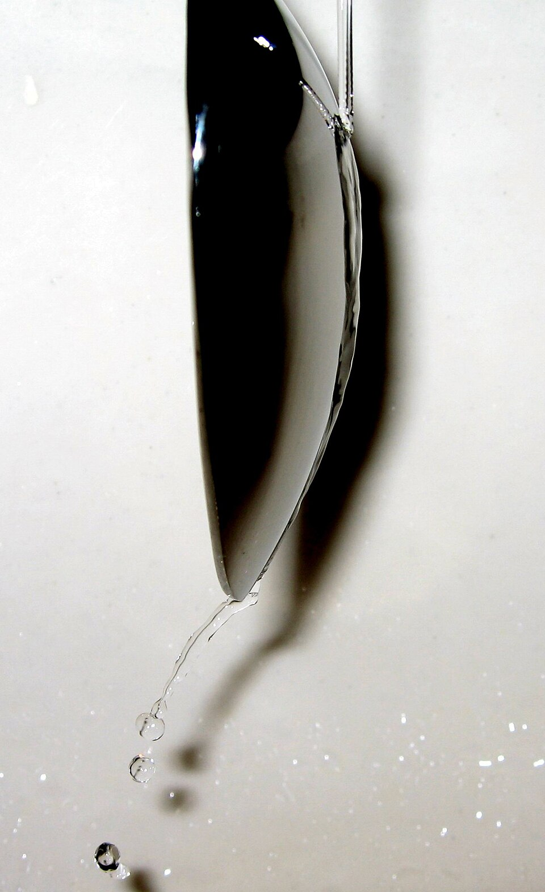

El chorro que arrastra aire y se pega a la pared
Abrí la canilla y acercá el dorso de una cuchara al chorro. En vez de rebotar, el agua se curva y sigue la forma de la cuchara, y la cuchara se siente atraída hacia el chorro. Ese efecto, la tendencia de un chorro a pegarse a una superficie cercana, se llama efecto Coanda. Es real, pero se lo invoca a menudo donde no corresponde.

Según un trabajo de H. J. Punte y M. A. Overmars, presentado en una conferencia de la Universidad de Linköping en 2019, el efecto lleva el nombre de Henri Coanda (1886–1972), inventor e ingeniero nacido en Rumania [1]. Cuentan que en 1910 Coanda construyó un avión, el Coanda-1910, que según ellos podría considerarse el primer avión a reacción; el avión se incendió, y Coanda notó que las llamas seguían la superficie del fuselaje [1]. Agregan que Thomas Young ya había observado algo parecido con una vela en 1800, y que el efecto fue reconocido oficialmente por Theodore von Kármán en 1934 [1].
La explicación más común, dicen Punte y Overmars, es la tendencia de un chorro a pegarse a una superficie vecina; pero para que sea completa hay que agregarle algo [1]. Un chorro libre, en un fluido quieto, arrastra con él parte del fluido que lo rodea. Las partículas que se van con el chorro bajan la presión a su alrededor, y eso produce una succión del fluido cercano hacia el chorro: es el arrastre o «entrainment» [1]. En un chorro libre, ese fluido se repone desde todos lados.
Si el chorro pasa cerca de una pared, en cambio, del lado de la pared no hay de dónde reponer el fluido arrastrado [1]. La presión de ese lado baja más que del lado abierto, y la diferencia de presión empuja el chorro hacia la pared, hasta que se pega a ella [1]. La superficie puede ser plana o convexa, como el dorso de una cuchara [1].
La multitud en la vereda: imaginá una multitud que camina rápido por una vereda y va arrastrando a la gente parada a los costados. Del lado de la calle, siempre aparece gente nueva para reemplazar a la que se fue. Del lado de la pared, en cambio, no queda nadie: se hace un vacío, y la multitud termina corriéndose hacia la pared. El chorro hace lo mismo con el aire.
Punte y Overmars insisten en una distinción importante: no hay que confundir el efecto Coanda con el aire que sigue la curva de un ala común [1]. Alrededor de un ala, todo el aire se mueve: no hay un chorro que se mezcle con aire quieto, y por lo tanto no hay succión de fluido que reemplace al arrastrado [1]. El efecto Coanda casi nunca ocurre naturalmente sobre un ala [1]. Cómo se sostiene de verdad un ala se cuenta en sustentación y circulación.
Pariente del arrastre de Bernoulli: la baja presión de un chorro rápido que «chupa» el fluido de alrededor es la misma que aprovechan el atomizador o el mechero de Bunsen, como cuenta OpenStax [2]. El efecto Coanda es lo que pasa cuando ese chupar está limitado de un lado por una pared. Cómo funciona un helicóptero con rotor de cola está en cómo vuela un helicóptero.
El efecto Coanda es la tendencia de un chorro a pegarse a una pared cercana: el chorro arrastra el fluido de alrededor, del lado de la pared no hay reemplazo, la presión baja y el chorro se curva hacia ella. Explica la cuchara bajo la canilla y se usa en helicópteros sin rotor de cola. Lo que no explica es el vuelo de un ala común, donde no hay un chorro que arrastre aire quieto.
Pregunta para la comunidad: Si soplás sobre la cara curva de una botella que tenés adelante de una vela, ¿la llama se apaga? Probalo con una lata o una botella, y explicá el resultado con el efecto Coanda.